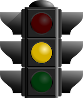

Extend Yourself - Snap Circuits Electricity: Sensors and Fraction Models
- Pick another project from the Snap Circuits book to build.
- Check out the Snap Circuits Kid Creations website to see what other kids have done. You can even design and submit your own circuit.
- Go online to learn more about integrated circuits. Who invented them? How are they made? How did they change the way we build and use electronics?
- Search online for the answers to these questions:
- How do automatic doors know when to open? How do elevators keep the door open when someone is in the way?
- How do sensors at stop lights know a car is waiting?
- How do burglar alarms protect your home?
- How does a SmartPhone or iPod know which way you are holding it? How does a touchscreen work?